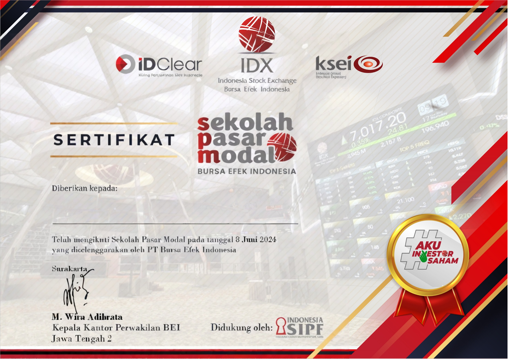
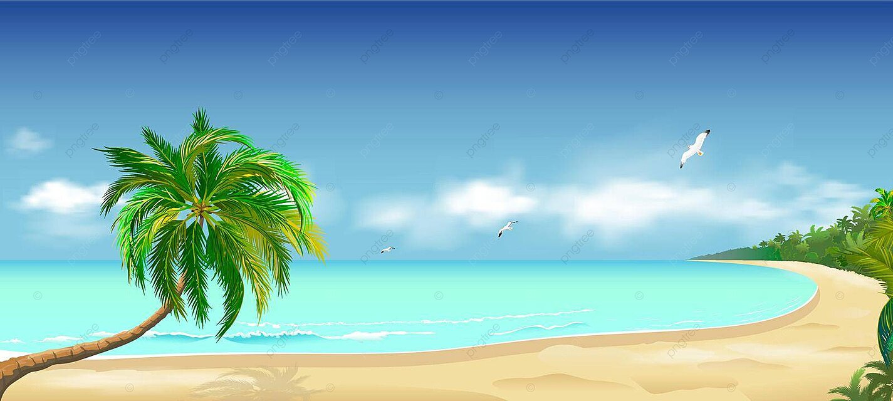

<!DOCTYPE html><html></html>
  <head>
    <meta charset="utf-8" />
    <title>Halaman Profil Bandung</title>
  </head>
  <body>
    <h1>Bandung</h1>
    <p>
      Kota metropolitan terbesar di Provinsi Jawa Barat, sekaligus menjadi ibu kota provinsi
      tersebut.
    </p>
 
    <ul>
      <li>
        <a href="#sejarah">Sejarah</a>
      </li>
      <li>
        <a href="#geografis">Geografis</a>
      </li>
      <li>
        <a href="#wisata">Wisata</a>
      </li>
    </ul>
 
    <h2 id="sejarah">Sejarah</h2>
    
    <!-- Kode lainnya disembunyikan... -->
 
    <h2 id="geografis">Geografis</h2>
    
    <!-- Kode lainnya disembunyikan... -->

    <h2 id="wisata">Wisata</h2>
    
    <!-- Kode lainnya disembunyikan... -->

    <article>
        <header>
          <h1>Judul Artikel</h1>
          <h2>Oleh: Dicoding Indonesia</h2>
        </header>
        <p>
          <!-- ....... Konten artikel dimulai dari sini ...... -->
        </p>
        <footer>
          <p>Bagikan artikel ini melalui</p>
          <ul>
            <li>Twitter</li>
            <li>Facebook</li>
            <li>
              <!-- ...... -->
            </li>
          </ul>
        </footer>
    </article>

    <article>
        <h2>Sejarah</h2>
        
        <p>Kata Bandung berasal dari kata bendung atau bendungan karena terbendungnya sungai Citarum oleh lava Gunung Tangkuban Parahu yang lalu membentuk telaga...</p>
    </article>
       
    <article>
      <h2>Geografis</h2>
      
      <p>Kota Bandung dikelilingi oleh pegunungan, sehingga bentuk morfologi wilayahnya bagaikan sebuah mangkok raksasa,[9] secara geografis kota ini terletak di tengah-tengah provinsi Jawa Barat..</p>
    </article>
       
    <article>
      <h2>Wisata</h2>
      
      <p>Sejak dibukanya Jalan Tol Cipularang, kota Bandung telah menjadi tujuan utama dalam menikmati liburan akhir pekan terutama dari masyarakat yang berasal dari Jakarta sekitarnya...</p>
    </article>

    <!-- aside -->
    <aside>
      <article>
        <header>
          <h2>Kota Bandung</h2>
          <p>Kota Kembang Paris van Java</p>
          <figure>
            
            <figcaption>Lambang</figcaption>
          </figure>
        </header>
      </article>
    </aside>

    <!-- Sector -->
    <article>
        <section>
          <h2>Wisata</h2>
          <p>
            Sejak dibukanya Jalan Tol Cipularang, kota Bandung telah menjadi tujuan utama dalam menikmati
            liburan akhir pekan terutama dari masyarakat yang berasal dari Jakarta sekitarnya. Selain
            menjadi kota wisata belanja, kota Bandung juga dikenal dengan sejumlah besar bangunan lama
            berarsitektur peninggalan Belanda.
          </p>
        </section>
        <section>
          <h3>Farm House Lembang</h3>
          
          <p>
            Kota Bandung dikelilingi oleh pegunungan, sehingga bentuk morfologi wilayahnya bagaikan sebuah
            mangkok raksasa,[9] secara geografis kota ini terletak di tengah-tengah provinsi Jawa Barat,
            serta berada pada ketinggian ±768 m di atas permukaan laut, dengan titik tertinggi di berada
            di sebelah utara dengan ketinggian 1.050 meter di atas permukaan laut dan sebelah selatan
            merupakan kawasan rendah dengan ketinggian 675 meter di atas permukaan laut.
          </p>
        </section>
        <section>
          <h3>Observatorium Bosscha</h3>
          
          <p>
            Memiliki beberapa teleskop, antara lain, Refraktor Ganda Zeiss, Schmidt Bimasakti, Refraktor
            Bamberg, Cassegrain GOTO, dan Teleskop Surya. Refraktor Ganda Zeiss adalah jenis teleskop
            terbesar untuk meneropong bintang. Benda ini diletakkan pada atap kubah sehingga saat teropong
            digunakan, atap tersebut harus dibuka. Observatorium Bosscha boleh dikunjungi oleh siapa pun,
            tanpa tiket. Namun, bagi yang ingin menggunakan teleskop Zeiss, wajib mendaftarkan diri. Untuk
            instansi atau lembaga pendidikan, diberikan jadwal hari Selasa sampai Jumat. Sementara itu,
            kunjungan individu dibuka setiap hari Sabtu.
          </p>
        </section>
    </article>
</body>

<footer>
    &copy; 2019, Dicoding Academy
</footer>
</html>